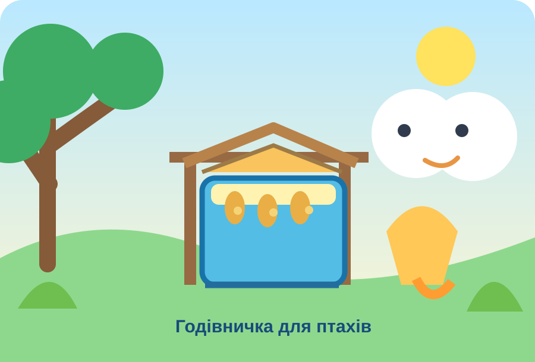

Головна / TRIZ навчання / Старт TRIZ
1–4 класи · 40 задач
Старт TRIZ
Побачте проблему. Придумайте рішення. Спробуйте!

Оберіть задачу за назвою. Кожна відкривається на окремій сторінці.
Побут і турбота
Задача 01Парасолька, що не залишає калюж1–2 класи Задача 02Помітний рюкзак1–3 класи
Задача 02Помітний рюкзак1–3 класи Задача 04Вазон під час канікул2–4 класи
Задача 04Вазон під час канікул2–4 класи Задача 05Паперовий міст через струмок3–4 класиЗадача 06Стільці, які не шумлять1–2 класиЗадача 07Прохолодна кімната влітку3–4 класиЗадача 08Кришка без дотику2–4 класи
Задача 05Паперовий міст через струмок3–4 класиЗадача 06Стільці, які не шумлять1–2 класиЗадача 07Прохолодна кімната влітку3–4 класиЗадача 08Кришка без дотику2–4 класи
Задача 02Помітний рюкзак1–3 класи
Задача 03Годівничка без розсипаного зерна2–4 класиЗадача 04Вазон під час канікул2–4 класиЗадача 05Паперовий міст через струмок3–4 класиЗадача 06Стільці, які не шумлять1–2 класиЗадача 07Прохолодна кімната влітку3–4 класиЗадача 08Кришка без дотику2–4 класиПредмети та простір
Задача 09Олівець на похилій парті1–2 класиЗадача 10Книжка без підставки1–2 класиЗадача 11Попередження про мокру підлогу1–2 класиЗадача 12Коробка для шкільного ярмарку1–2 класиЗадача 13Олівці знаходяться за секунду1–2 класиЗадача 14Двері без гучного удару1–3 класиЗадача 15Вода у вузьку пляшку1–3 класиЗадача 16Довга стежка в маленькому саду1–3 класиЗадача 17Взуття після дощу2–3 класиЗадача 18Два малюнки одночасно2–3 класиЗадача 19Кришечка, яка залишається поруч2–3 класиЗадача 20Вода для грядки по краплині2–3 класи
Конструювання й природа
Задача 21Вежа з одного аркуша2–4 класиЗадача 22Дах для макета з паперу2–4 класиЗадача 23Тихе повідомлення2–4 класиЗадача 24Один стіл — багато занять2–4 класиЗадача 25Сніговик, який тане повільніше2–4 класиЗадача 26Остання крапля2–4 класиЗадача 27Доріжка після зливи3–4 класиЗадача 28Більше зелені на підвіконні3–4 класиЗадача 29Човник для вантажу3–4 класиЗадача 30Насіння без ручного сортування3–4 класи
Сигнали, енергія та довкілля
Задача 31Світло для темного куточка3–4 класиЗадача 32Вітер рухає візочок3–4 класиЗадача 33Сигнал без звуку3–4 класиЗадача 34Рослина під дощем3–4 класиЗадача 35Упаковка для крихкої прикраси3–4 класиЗадача 36Коробка без піднімання3–4 класиЗадача 37Прохолодна пляшка на пікніку3–4 класиЗадача 38Дощ допомагає прибирати3–4 класиЗадача 39Папірці після майстерки3–4 класиЗадача 40Музика дощу3–4 класи